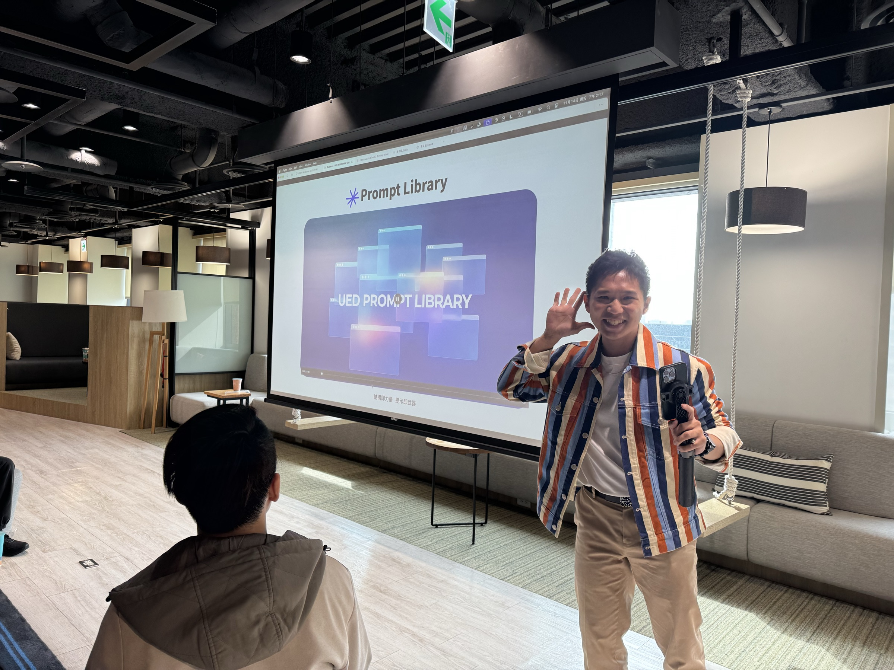

01 · Open
Start where you work
Type /ued in an input field to open the library where you are working.
AI tooling · Side project · 2025
I designed and developed a browser extension that helps designers find, customize, and reuse AI prompt templates in their existing workflow.
As AI became part of the team’s everyday work, useful prompts were often scattered across personal notes and conversations. This made them difficult to find, reuse, and improve as shared team knowledge.
Designers also lacked structured prompt templates tailored to recurring tasks such as writing, analysis, ideation, and design review.
I organized prompts into reusable templates and built the library as a browser extension. Designers could open it from an existing AI input field instead of switching to a separate tool.
Reduce the distance between finding a prompt and using it.
The library stays close to where designers already work.
Type /ued in an input field to open the library where you are working.

Browse by category, search by keyword, or filter prompts by task and platform.

Fill in the required variables while previewing the completed prompt in real time.

Insert the prompt into the original input field.
I chose a browser extension so designers could open the library from an AI input field without switching to another tool.
I organized prompts by category, task, and platform, and added search so the team could find a relevant prompt.
I separated reusable instructions from task-specific details. Guided fields and a live preview showed how each prompt would look before use.
I introduced the extension in an internal team walkthrough and released it for everyday use. The session showed how designers could find a prompt, adapt it to their task, and use it in their AI workflow.

This side project showed me that helping a team use AI is not only about writing better prompts. It also depends on how people organize and find shared knowledge, and how easily a tool fits into their existing workflow.